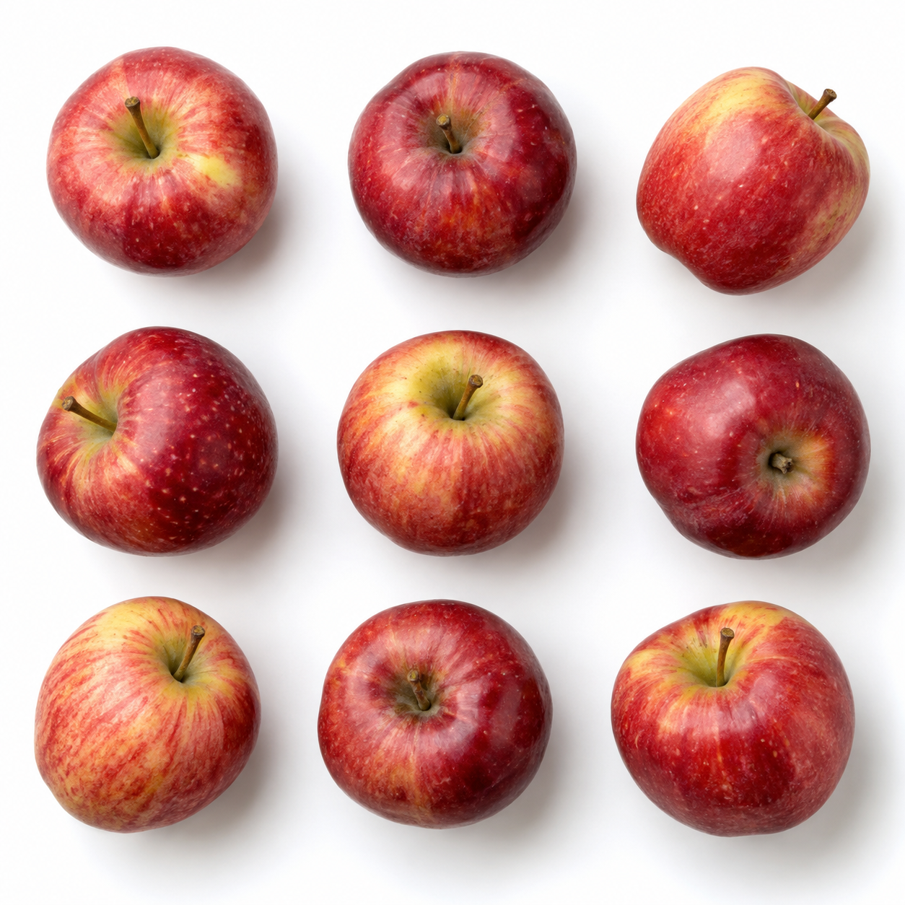

UNIT 01｜蘋果偵測與數量統計
使用不同蘋果數量與排列方式的白底教材，進行物件偵測與計數。
2 張教材


UNIT 02｜大小量測與建立 Bar Code
使用不同蘋果尺寸、固定 Stop Sign 比例尺的白底教材，進行校正、尺寸量測與 Bar Code 建立。
3 張教材


UNIT 03｜顏色與飽滿度檢測
使用不同紅色程度與飽滿度的白底蘋果教材，觀察顏色分析指標與分級結果。
3 張教材


UNIT 04｜瑕疵檢測
使用不同表面狀況的白底蘋果教材，觀察瑕疵區域分析與檢測結果。
3 張教材


實際課堂操作請將教材列印後，使用紙本教材對著攝影機進行檢測。教材頁僅提供預覽與下載，不直接參與辨識。